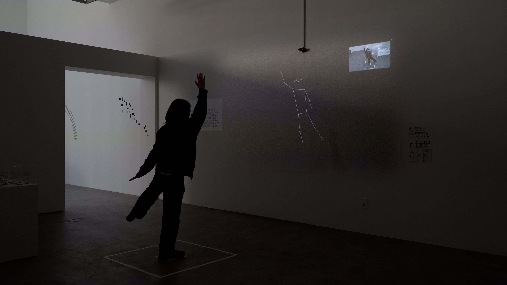

PROBLEM
사람이 영상 전체를 훑거나 동작 이름을 붙이지 않고, 움직임 자체로 아카이브를 탐색해야 했습니다.
CASE STUDY / 02 · 움직임 검색 시스템
댄스·발레 영상을 추적된 포즈 시퀀스로 바꾸고, 32프레임 움직임 윈도우를 128차원 시간적 임베딩으로 학습해 유사 동작을 검색했습니다. 결과는 원본 영상의 구간으로 돌아가고, 실시간 카메라 입력과도 연결됩니다.

AT A GLANCE
사람이 영상 전체를 훑거나 동작 이름을 붙이지 않고, 움직임 자체로 아카이브를 탐색해야 했습니다.
정지 포즈를 분류하지 않고 짧은 포즈 시퀀스를 시간적 움직임의 표현으로 다뤘습니다.
포즈 데이터셋, 학습 파이프라인, 검색 API, 캡처·추론·스트리밍 실행 흐름을 연결했습니다.
32F / 128차원움직임을 검색·재생·overlay/mirror 경험으로 연결
01 CONTEXT & PROBLEMS
무용과 몸짓 영상은 많은 움직임 정보를 담고 있지만, 보통은 작품명·인물·장르 같은 메타데이터나 사람이 직접 영상을 훑는 방식으로만 찾을 수 있습니다. 같은 동작이 영상의 어느 시점에 있는지, 다른 사람이 비슷하게 움직인 구간이 어디인지 찾으려면 움직임 자체를 비교할 수 있어야 합니다.
사람이 모든 영상 구간에 동작 이름을 직접 붙이는 방식은 비용이 크고, 동작의 시작과 끝 또는 전환 구간을 일관되게 나누기도 어렵습니다. 고정된 동작 분류 체계만으로는 탐색적인 움직임 검색에도 한계가 있습니다.
댄스와 발레 영상 아카이브를 메타데이터나 수작업 탐색이 아니라 움직임 자체로 검색하고, 검색 결과를 하나의 경험으로 재생·연결·조합하려면 어떻게 해야 하는가?
팔이 올라가 있는 한 장면만으로는 올리는 중인지, 내리는 중인지 알 수 없습니다.
사용자 움직임은 중간에서 시작·종료되거나 원본과 다른 속도·방향을 가질 수 있습니다.
검색 ID가 아니라 이해할 수 있는 원본 영상 구간으로 돌아가야 했습니다.
02 SYSTEM APPROACH
이 프로젝트의 핵심 추상화는 동작을 미리 정해진 클래스 이름으로 분류하는 대신, 짧은 포즈 시퀀스를 움직임의 시간적 표현으로 바꾸는 것이었습니다.
32프레임 윈도우는 한 프레임의 정지 자세가 아니라, 몸의 변화가 이어지는 짧은 구간을 다룹니다. 이 윈도우를 128차원 임베딩으로 바꾸면, 비슷한 움직임을 벡터 공간에서 비교하고 검색할 수 있습니다.
이 표현은 검색만을 위한 것이 아닙니다. 같은 임베딩을 검색, 클러스터링, 세그먼트, 재생, 시각화, 실시간 매칭의 공통 기반으로 사용했습니다.
flowchart TB subgraph Archive["오프라인 아카이브 준비 · 색인"] Video["댄스 · 발레 영상"] --> ArchivePose["사람 추적 · 포즈 시퀀스"] ArchivePose --> ArchiveWindow["32프레임 윈도우"] ArchiveWindow --> Training["시간 인코더 학습"] Training --> ArchiveEmbedding["128차원 시간적 임베딩"] ArchiveEmbedding --> Index["FAISS HNSW<br/>움직임 임베딩 색인"] ArchiveWindow --> Metadata["윈도우 · 구간 · 프레임 메타데이터"] end subgraph Live["실시간 상호작용"] Camera["실시간 카메라"] --> LivePose["사람 추적 · 포즈 시퀀스"] LivePose --> LiveWindow["최근 32프레임 윈도우"] LiveWindow --> Query["같은 인코더로<br/>조회용 임베딩 생성"] end Query --> Search["유사 움직임 검색"] Index --> Search Metadata --> Search Search --> Match["일치한 윈도우 / 구간<br/>원본 메타데이터"] Match --> Experience["재생 · 클립 연결 · 오버레이 / 미러 · 포즈 블렌딩"]
원본 영상이나 카메라 이미지를 그대로 비교하지 않고, 사람의 동작을 프레임별 키포인트·바운딩 박스·트랙·타임스탬프로 추출해 JSONL 포즈 시퀀스로 저장했습니다. 이 중 안정적으로 이어지는 트랙을 골라 학습에 사용할 동작 구간을 만들었습니다.
이 과정의 목적은 프레임 하나의 모양을 모으는 것이 아니라, 사람의 위치나 화면 안의 크기와 같은 우연한 차이에서 벗어나 움직임을 비교할 수 있는 입력을 만드는 것이었습니다.
포즈 추출 결과에는 카메라 각도, 체형, 추적 흔들림, 가려진 관절처럼 실제 환경에서 생기는 차이가 남습니다. 이를 무작정 크게 변형하면 움직임의 의미까지 훼손할 수 있으므로, JSONL 포즈 윈도우의 원본·정규화 결과·증강 결과를 나란히 비교하는 증강 결과 확인 도구를 만들었습니다.
좌표·시간·관절 가시성에 대한 변형을 하나씩 확인하며, 움직임의 흐름은 유지하면서도 실제 추출 오류와 촬영 차이를 반영할 수 있는 범위를 정했습니다. 확정한 파라미터 묶음은 학습 설정에 반영했고, 학습 시 같은 원본 윈도우에서 독립적인 두 증강 뷰를 만들어 대조 학습에 사용했습니다.
같은 포즈 데이터를 짧은 동작 단위의 유사도를 배우는 입력과 더 긴 움직임 맥락을 비교하는 입력으로 나누어 구성했습니다.
독립적으로 증강한 두 뷰를 만들고, 그중 하나는 관절과 시간 축 일부를 마스킹한 입력으로도 구성했습니다. 짧은 동작 단위의 유사도와 복원 신호를 학습합니다.
별도 로더에서 독립적인 두 뷰를 구성해, 더 긴 시간 범위에서 이어지는 움직임 맥락을 비교하는 학습 신호로 사용했습니다.
모든 입력은 하나의 공용 시간 인코더(TemporalEncoder)를 통과합니다. JointMixer는 관절 사이의 관계를, 서로 다른 확장 간격의 시간 합성곱 블록은 시간에 따른 변화와 리듬을 다룹니다. 32프레임 윈도우의 출력은 128차원 움직임 표현 h로 만들고, 실제 검색 색인과 실시간 조회에 공통으로 사용합니다.
짧은 구간 대조 학습은 동일 원본 또는 시간적으로 가까운 윈도우를 같은 움직임으로 간주해, 인접 구간도 유사한 움직임 표현으로 학습합니다.
마스킹된 골격 복원 학습은 관절과 시간 축 일부가 가려진 32프레임 입력에서 원래 포즈를 복원하도록 학습합니다.
긴 구간 대조 학습은 64프레임 두 뷰를 비교해, 더 긴 움직임 맥락을 구분하는 학습 신호를 만듭니다.
flowchart LR subgraph Inputs["학습 입력"] Window["32프레임<br/>증강 뷰 두 개"] Masked["32프레임<br/>관절 · 시간 마스킹"] Sequence["64프레임<br/>증강 뷰 두 개"] end Encoder["공용 시간 인코더<br/>JointMixer · 시간 합성곱"] Window --> Encoder Masked --> Encoder Sequence --> Encoder Encoder --> Embedding["128차원 움직임 표현 h"] Embedding --> Search["검색 색인 · 실시간 조회"] subgraph Training["학습에서만 쓰는 목적별 분기"] Embedding --> WindowHead["짧은 구간 비교 분기"] WindowHead --> WindowLoss["Lwindow"] Encoder --> Decoder["복원 디코더"] Decoder --> MSMLoss["Lmsm"] Encoder --> SequenceHead["긴 구간 비교 분기"] SequenceHead --> SequenceLoss["Lsequence"] WindowLoss --> Total["Ltotal<br/>= Lwindow + 0.5 Lmsm + Lsequence"] MSMLoss --> Total SequenceLoss --> Total end
학습 단계에서는 세 학습 신호의 손실을 Ltotal = Lwindow + 0.5 × Lmsm + Lsequence로 합산해, 한 번의 역전파로 공용 인코더와 목적별 분기를 함께 업데이트합니다. 실제 추론과 검색에서는 이 학습용 분기를 제외하고, 인코더가 만든 128차원 움직임 표현만 사용합니다. 정규화와 증강은 추출기·카메라·사람의 차이처럼 움직임 자체와 직접 관련 없는 요소가 표현에 과도하게 영향을 주지 않도록 합니다.
03 CONTRIBUTION & OUTCOME
검색은 가까운 벡터 ID를 반환하는 데서 끝나지 않습니다. 별도 메타데이터를 통해 검색된 윈도우를 원본 파일, 트랙, 시간 구간, 재생 정보로 되돌렸습니다. 실시간 처리 흐름은 후보를 누적해 흔들리는 결과를 정리하고, 재생·클립 연결·포즈 블렌딩을 위한 재생 정보를 화면으로 전달했습니다.
정지 포즈가 아닌 시간적 움직임을 비교 가능한 표현으로 변환
유사 윈도우를 원본 영상 구간으로 되돌리고, 재생·클립 연결·포즈 블렌딩으로 확장
실시간 매칭으로 검색 결과를 관객의 움직임과 연결